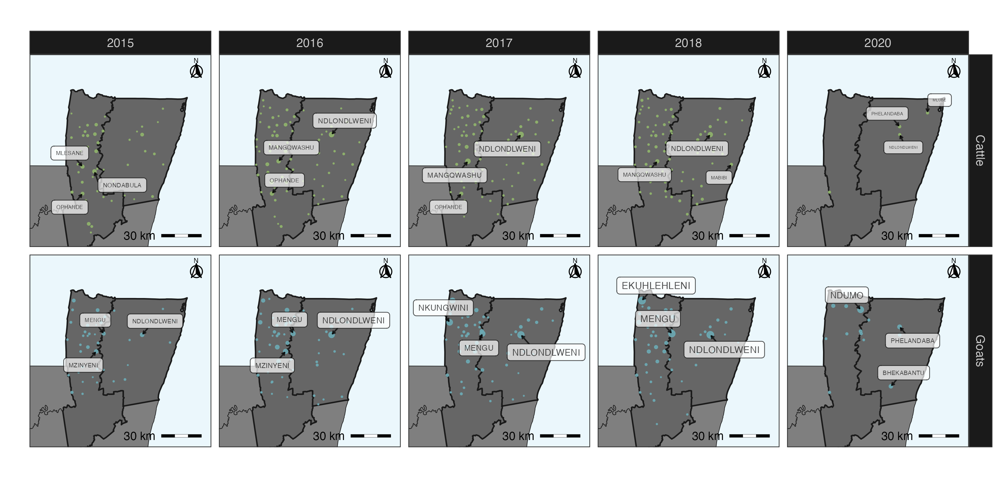
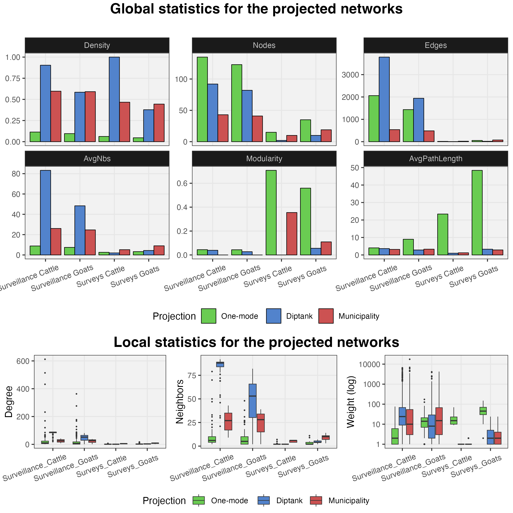

Using R for Animal health research

Introduction
In this workshop we will cover basics of R for animal health
research. Some concepts we cover in this workshop includes data
management, visualization, introduction to analytical methods and
geographical information systems. At the end of the workshop, the
participants will have a basic understanding of R and geographical
information systems. For this workshop we will be using a data set
derived from a bovine rabies study done in the south of Mexico in 2016
provided by Alejandro Zaldivar Gomez et. al.
No software needs to be installed for this workshop, all the exercises
will be done in a web based platform for cloud computing. Please follow
these instructions for setting up your
posit.cloud account. All the concepts covered in this workshop are
directly transferable to Rstudio for people that prefer to run the
exercises locally.
Objectives
- Understand the basic Rstudio ecosystem and R programming language syntax.
- Use R for data visualization.
- Integrate geospatial data in the analysis and visualization.
- Get a crash course in reproducible research.
- Introduce some concepts from network theory.
At the end of this workshop you will be able to use your own R to process your data and generate visualizations such as the following:



Tentative schedule
| Day 01 | Day 02 | Day 03 | |
|---|---|---|---|
| Introduction to R and GIS | Network Analysis | Risk Assessment | |
| 9:00-10:00 | Introduction to R | Introduction to Social Network Analysis | Case Studies |
| 10:00-10:30 | R syntax and the tidyverse | Network analysis in R | Introduction to Risk Assessment |
| 10:30-10:50 | Coffee break | Coffee break | Coffee break |
| 10:50-12:00 | Graphics in R | Network visualization | Risk assessment in R I |
| 12:00-13:00 | Lunch | Lunch | Lunch |
| 13:00-14:00 | Intro to vectors and Rasters | Bipartite Networks | Feedback evaluation |
| 14:00-14:20 | Coffee break | Coffee break | Coffee break |
| 14:20-15:00 | Spatial statistics and Cartography | Dynamic Networks | Office Hours |
Data
The data used for this workshop is contained in the package
STNet. To install STNet we need the package
devtools and use the command
devtools::install_github("spablotemporal/STNet").
Links
- Shared folder, we will use this folder to provide some workshop materials such as code, data, or other resources.
This course has been developed with contributions from: Jose Pablo Gomez-Vazquez,
Jerome
Baron Alejandro Zaldivar, and Beatriz
Martinez-Lopez.
Feel free to use these training materials for your own research and
teaching. When using the materials we would appreciate using the proper
credits. If you would be interested in a training session, please
contact: jpgo@ucdavis.edu